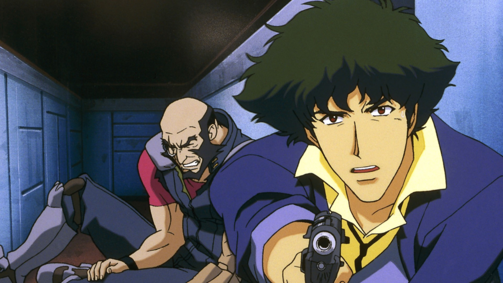
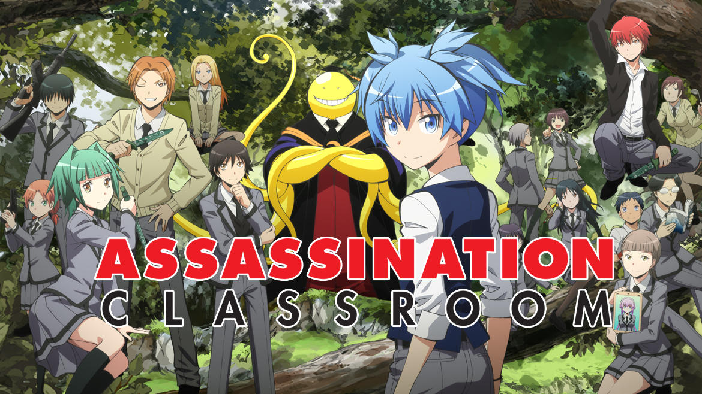
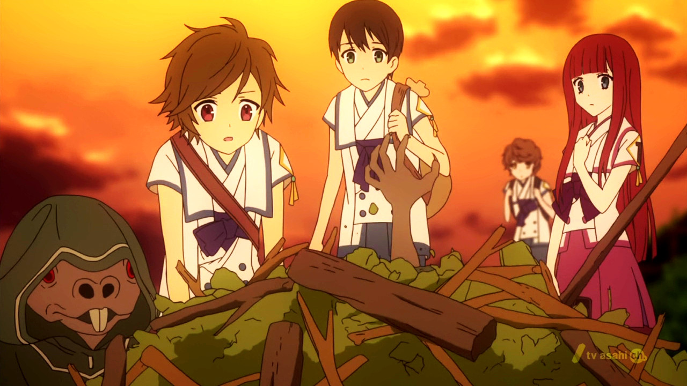
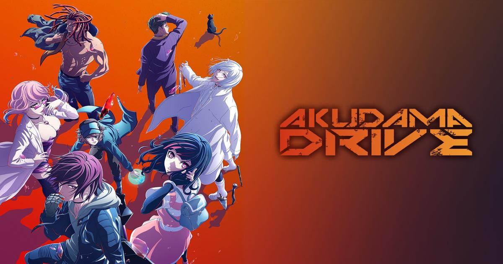
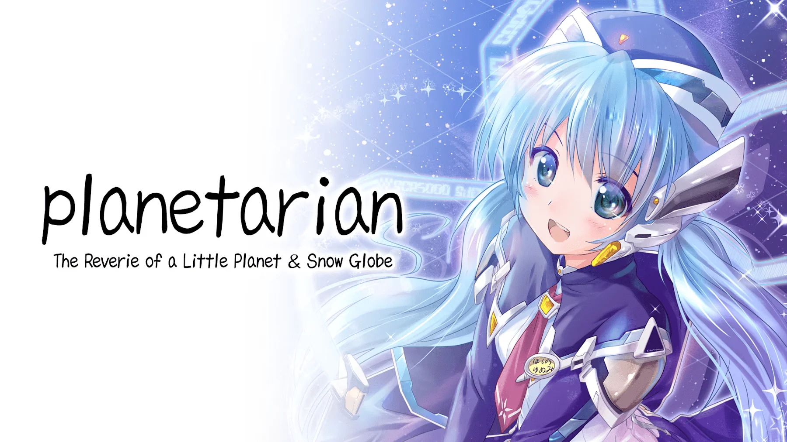
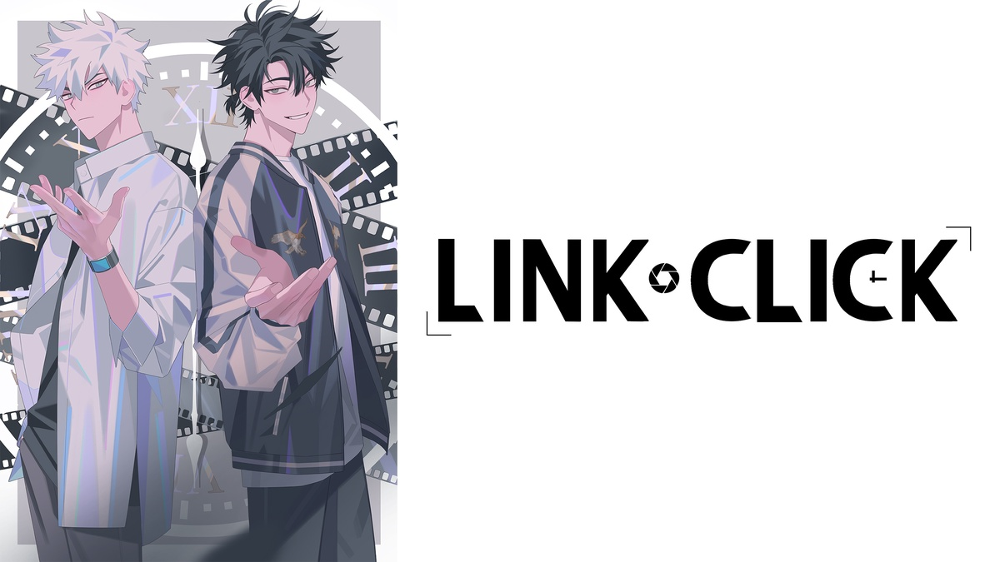
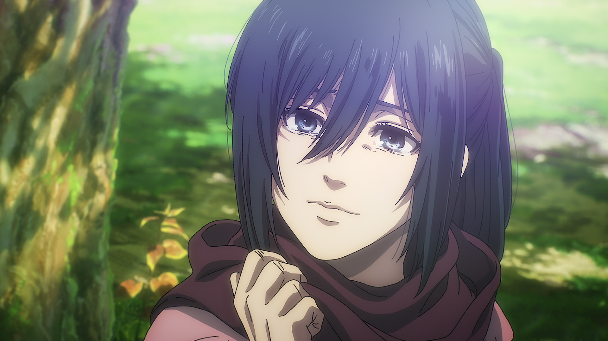

SMASH Senpai
Top 10 Anime With the Best Endings That Stayed With Fans Forever
A great anime ending does more than conclude a story. It leaves a feeling — satisfaction, sadness, relief, or quiet reflection — that stays long after the final episode ends.
While many anime struggle to stick the landing, a rare few manage to deliver endings that feel earned, emotionally powerful, and impossible to forget. These finales don’t rely on shock alone — they provide closure, meaning, and lasting impact.
Some endings resolve years of character growth. Others leave viewers staring at the screen in silence, processing what they just experienced. In every case, the final moments redefine the entire journey.
This list highlights the Top 10 Anime With the Best Endings — stories that ended at the right moment, stayed true to their themes, and left fans thinking about them long after the credits rolled.
Sponsored
#1 Code Geass

Code Geass is almost universally regarded as having one of the greatest anime endings of all time. What makes its finale so powerful isn’t just the shock or spectacle — it’s how perfectly it recontextualizes everything that came before it. The ending doesn’t erase Lelouch’s sins. Instead, it gives them meaning.
Throughout the series, Lelouch walks a thin line between revolutionary and tyrant. He lies, manipulates, sacrifices allies, and embraces cruelty in the name of a better world. By the time the final arc begins, viewers are forced to question whether he has gone too far — or whether he was always planning something greater.
The Zero Requiem is what elevates Code Geass into legend. Lelouch chooses to become the world’s greatest villain, uniting humanity through hatred directed solely at him. His death is not a punishment or a redemption — it’s a calculated act of responsibility. Peace is achieved not through victory, but through sacrifice.
What makes the ending unforgettable is its emotional clarity. Every character’s role feels complete. The final moments are quiet, tragic, and deeply satisfying. Code Geass ends with certainty — a rare achievement that leaves fans arguing not about what happened, but about how perfect it was.
- Episode count: 50
- Genre: Mecha, Psychological, Drama
- Known for: One of anime’s most iconic finales
- Core theme: Sacrifice for lasting peace

play anime smash or pass here (not sponsored)
SMASH SENPAI – Smash or Pass#2 Cowboy Bebop
Cowboy Bebop’s ending is legendary not because it explains everything, but because it doesn’t. Instead of closure through answers, it delivers closure through emotion. The final episodes feel less like an ending and more like an inevitable conclusion to a life already lived.
Spike Spiegel spends the entire series running from his past. Every bounty, every joke, every moment of detachment is a distraction from unresolved pain. By the final arc, it becomes clear that Spike isn’t chasing survival — he’s chasing meaning.
The confrontation with Vicious is quiet, brutal, and deeply personal. There’s no triumphant music or dramatic victory. Spike walks forward knowing exactly what awaits him. His final smile isn’t heroic — it’s acceptance.
Cowboy Bebop’s ending stays with fans because it feels honest. Life doesn’t always give happy conclusions. Sometimes it gives resolution through choice. “You’re gonna carry that weight” isn’t just a line — it’s a statement about memory, loss, and moving on. Few anime endings feel this mature, restrained, and timeless.
- Episode count: 26
- Genre: Sci-Fi, Drama, Action
- Known for: Iconic final episode and quote
- Core theme: Acceptance and existential closure
Sponsored
#3 Fullmetal Alchemist: Brotherhood

Fullmetal Alchemist: Brotherhood delivers one of the most complete and emotionally satisfying endings in anime history. Unlike many long-running series, it ties every major character arc together without rushing or sacrificing emotional payoff.
At its core, FMAB is a story about consequence. Every action carries weight, and every mistake demands accountability. The final arc honors this philosophy, resolving the central conflict not through overwhelming power, but through human connection and sacrifice.
Edward’s final choice defines the series. He gives up alchemy — the very thing that shaped his identity — in order to reclaim what truly mattered. It’s not a flashy victory. It’s a mature one. The ending reinforces the idea that growth sometimes means letting go.
What makes FMAB’s ending linger is balance. It’s hopeful without being unrealistic, emotional without being manipulative. Every surviving character earns their future, and every loss is respected. Brotherhood doesn’t just end — it completes its promise, leaving fans with a rare sense of genuine closure.
- Episode count: 64
- Genre: Action, Fantasy, Drama
- Known for: Perfectly executed long-form conclusion
- Core theme: Growth through sacrifice and humanity
#4 Assassination Classroom
Assassination Classroom delivers one of the most emotionally devastating yet meaningful endings in anime. What begins as a bizarre comedy about students tasked with killing their teacher slowly transforms into a heartfelt story about growth, guidance, and loss. By the time the final arc arrives, viewers realize that the assassination was never the real goal.
Koro-sensei is more than a teacher — he is the emotional foundation of Class 3-E. He doesn’t just teach academics or combat skills; he teaches his students self-worth, confidence, and how to face failure. Every lesson is tailored to help them survive in a world that once discarded them.
The ending works because it is inevitable yet painful. There is no loophole, no miracle escape. Koro-sensei accepts his fate with pride, ensuring that his students are strong enough to move forward without him. The final roll call scene is quiet, personal, and heartbreaking — a farewell earned through trust and love.
What makes Assassination Classroom unforgettable is how hopeful it remains. The story doesn’t end with despair. It ends with proof that a great teacher never truly leaves — their influence lives on in the lives they changed. Few anime endings balance grief and gratitude this perfectly.
- Episode count: 47
- Genre: Action, Comedy, Drama
- Known for: One of the most emotional anime finales
- Core theme: Growth through guidance and loss
Sponsored
#5 Shinsekai Yori (From the New World)
Shinsekai Yori’s ending is unsettling, thought-provoking, and deeply philosophical. Unlike traditional anime finales that offer comfort or triumph, this ending forces viewers to confront uncomfortable truths about morality, power, and what it means to be human.
Throughout the series, the world appears peaceful on the surface, but beneath it lies a system built on fear and control. As secrets are revealed, the audience slowly realizes that the society protecting humanity may be just as monstrous as the threats it claims to suppress.
The final revelation about the Queerats redefines the entire narrative. The true tragedy isn’t their rebellion — it’s how systematically they were stripped of humanity. The ending does not provide a clear villain or hero. Instead, it exposes how survival can justify cruelty when fear dictates morality.
Shinsekai Yori ends with quiet reflection rather than resolution. The world continues, but it is forever changed. Viewers are left questioning whether peace built on oppression can ever be considered righteous. This ending lingers long after the credits, making it one of anime’s most intellectually haunting conclusions.
- Episode count: 25
- Genre: Psychological, Sci-Fi, Horror
- Known for: Dark moral ambiguity and worldbuilding
- Core theme: Ethics, power, and societal control
#6 Katanagatari

Katanagatari’s ending is quietly devastating, built not on shock value but on emotional inevitability. The series presents itself as a weapon-collecting adventure, yet beneath the action lies a deeply personal story about love, purpose, and loss.
Shichika begins the journey as an empty vessel — a warrior who exists only to follow orders. Togame gives him direction, curiosity, and eventually, something far more dangerous: emotional attachment. Their bond grows naturally through conversation, trust, and shared experiences rather than forced romance.
The ending strips away the illusion of heroism. Victory comes at a cost that cannot be undone. Shichika fulfills his role perfectly, yet in doing so loses the very thing that gave his life meaning. The final moments are restrained, melancholic, and painfully human.
What makes Katanagatari’s ending exceptional is its commitment to consequence. There is no false happiness or sudden reversal. The story ends exactly as it promised — with truth, loss, and growth. It’s an ending that hurts, but feels undeniably honest.
- Episode count: 12
- Genre: Action, Romance, Adventure
- Known for: Minimalist storytelling and emotional payoff
- Core theme: Love, purpose, and irreversible choices
Sponsored
#7 Akudama Drive
Akudama Drive delivers a wild, stylish ending that perfectly matches its cyberpunk chaos. What begins as a fast-paced crime anime slowly transforms into a powerful statement about identity, freedom, and how society labels people as disposable. By the final episodes, the line between criminal and hero is completely erased.
The brilliance of Akudama Drive’s ending lies in its escalation. Each character embraces who they truly are, not the roles forced upon them by the Kansai system. Even characters who begin as selfish or shallow find purpose through rebellion. Their choices feel earned, not romanticized.
The Swindler’s transformation is the emotional core of the finale. She starts as an ordinary girl trying to survive, but ends as a symbol of resistance against an inhuman system. Her final actions are tragic yet empowering, proving that even small people can leave massive impacts.
Akudama Drive ends in destruction, but also hope. The world doesn’t magically improve, yet the system is shaken. The ending sticks with viewers because it refuses comfort — freedom is earned through sacrifice, and rebellion always comes at a cost.
- Episode count: 12
- Genre: Cyberpunk, Action, Sci-Fi
- Known for: Stylish violence and social commentary
- Core theme: Identity, rebellion, and freedom
#8 Planetarian: The Reverie of a Little Planet
Planetarian delivers one of the quietest yet most heartbreaking endings in anime. Set in a post-apocalyptic world, the story focuses not on action or survival, but on hope — even when humanity has already failed itself.
Yumemi, an abandoned robot programmed to serve humans, represents innocence in a broken world. Despite being surrounded by ruin, she never loses her purpose or optimism. Her belief in humanity contrasts sharply with the cynicism of the Junker who meets her.
The ending is devastating precisely because it is gentle. There are no dramatic twists or grand battles. Instead, the story concludes with quiet acceptance, memory, and legacy. Yumemi fulfills her role even when no one remains to reward her.
Planetarian’s ending lingers because it asks a painful question: what does it mean to be human? In a world where humans abandoned compassion, a machine preserves it. The final moments are short, but emotionally overwhelming — proving that even the smallest stories can leave the deepest scars.
- Episode count: 5 (OVA)
- Genre: Sci-Fi, Drama
- Known for: Minimal dialogue, maximum emotion
- Core theme: Hope, memory, and humanity
#9 Link Click
Link Click’s ending hits hard by exposing the brutal consequences of time manipulation. What starts as an episodic emotional thriller slowly evolves into a high-stakes narrative about fate, regret, and irreversible loss.
Cheng Xiaoshi and Lu Guang believe they can help people without changing the timeline. However, the ending proves that intention is never enough. Every intervention leaves scars, and some tragedies exist precisely because of their interference.
The final arc is emotionally relentless. Characters suffer not because they are weak, but because time itself is cruel. The anime refuses to grant easy answers or happy escapes. Choices made in desperation echo across timelines, creating pain that cannot be undone.
What makes Link Click’s ending unforgettable is how personal it feels. The tragedy isn’t cosmic — it’s human. Missed chances, broken promises, and moments that can never be relived. The ending cements Link Click as one of the most emotionally intense time-travel stories in modern animation.
- Episode count: 11 (Season 1)
- Genre: Thriller, Supernatural, Drama
- Known for: Emotional time-travel storytelling
- Core theme: Fate, regret, and consequence
#10 Attack on Titan
Attack on Titan’s ending is one of the most debated conclusions in anime history. Regardless of opinion, its impact is undeniable. The series evolves from survival horror into a massive philosophical exploration of freedom, war, and human nature.
Eren Yeager’s final path challenges viewers to confront uncomfortable truths. He is neither hero nor pure villain — he is the product of endless conflict. The ending forces audiences to question whether freedom achieved through destruction can ever be justified.
Rather than glorifying violence, the finale exposes its consequences. Every victory leaves scars, and no side escapes guilt. The cycle of hatred remains, emphasizing that war never truly ends — it only pauses.
Attack on Titan’s ending stays with fans because it refuses simplicity. It does not offer closure, only reflection. Love, sacrifice, and freedom collide in a conclusion that mirrors reality: messy, painful, and unresolved. Few anime dare to end this boldly.
- Episode count: 87+
- Genre: Action, Drama, Dark Fantasy
- Known for: Moral complexity and worldbuilding
- Core theme: Freedom, war, and consequence
Play Smash or Pass on SMASH Senpai.
 PLAY SMASH OR PASS
PLAY SMASH OR PASS